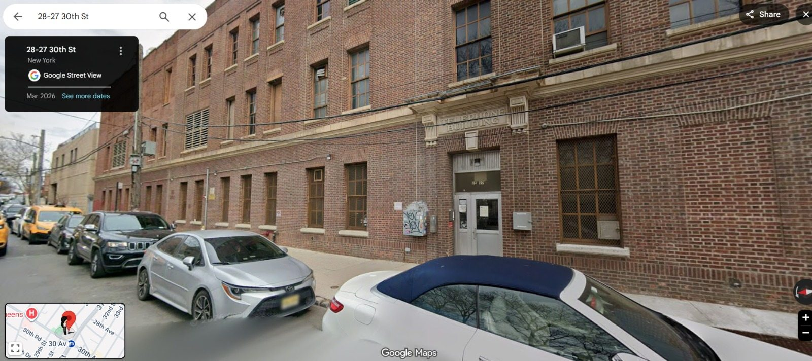

Lot
21,213 sq ft
198 × 111 ft
A four-story Verizon telephone building on a 21,213 sq ft lot zoned C4-4A. Verizon has owned it for decades, carries no loan on it, and has sold parts of its other New York switching buildings to developers.

A sale decision sits with Verizon's corporate real estate group, not with anyone at the building. These are the doors in, best first.
C T Corporation System at 28 Liberty St is Verizon's registered agent for legal papers only. It is not a sales contact.
The offer that fits: buy the unused building rights or the floors Verizon doesn't need, and leave the switching equipment in place. That is the shape of both past deals.
| Date | Work | Status |
|---|---|---|
| Jun 2026 | Replace standpipe fire pump in cellar | Permit issued |
| Apr 2025 | Replace cellar and roof generators and switchgear with one 750 kW diesel generator | Signed off |
| Apr 2025 | Mechanical and structural changes | Signed off |
| May 2022 | New duct opening, AC replacement on 3rd floor and roof | Signed off |
| Dec 2020 | New boiler and gas service | Signed off |
| Sep 2014 | Fiber switch room preparation | Signed off |
| Address | Building | Owner |
|---|---|---|
| 30-01 30th Ave | Retail · 1920 | Individual owner |
| 30-05 30th Ave | Office · 1924 | 30-05 Grand Avenue Realty LLC |
| 30-09 30th Ave | 8-unit walk-up · 1930 | 30 Avenue LLC |
| 30-11 30th Ave | Stores + 3 apartments · 1930 | 30-11 Grand Avenue Realty LLC |
Estimates The city does not publish building size for utility lots. Floor count and height come from the city's building outline and street view; the ~66,000 sq ft built and ~19,000 sq ft unused figures assume four full floors and need a survey to confirm. Everything else is from New York City and New York State public records, pulled Oct 15, 2026.